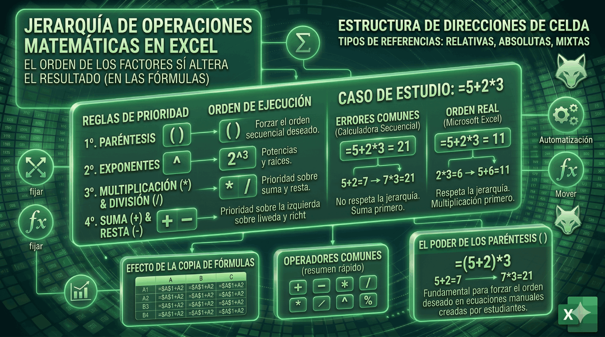

Jerarquía de Operaciones Matemáticas
El orden importa: descubre cómo Excel calcula las ecuaciones y por qué los paréntesis son tus mejores amigos.

El misterio de =5+2*3
Imagina que escribes la siguiente fórmula en una celda de Excel: =5+2*3.
Si la lees de izquierda a derecha, podrías pensar: "5 más 2 es igual a 7, y 7 por 3 es 21".
Sin embargo, si presionas ENTER, Excel te dará como resultado 11. ¿Por qué se equivoca Excel? La respuesta es que no se equivoca; simplemente está siguiendo estrictamente la jerarquía de las operaciones matemáticas.
El Orden de Cálculo en Excel
Excel, al igual que cualquier calculadora científica, no lee de izquierda a derecha de forma plana. Sigue un orden específico de evaluación, que a menudo se enseña en la escuela bajo acrónimos como PEMDAS o BODMAS.
- Paréntesis: Cualquier cosa dentro de
( )se calcula primero. - Exponentes: Elevaciones a potencias, como
2^3. - Multiplicación (*) y División (/): Se calculan de izquierda a derecha (tienen el mismo nivel de prioridad).
- Suma (+) y Resta (-): Se calculan al final, también de izquierda a derecha.
Resolviendo el misterio
Volviendo a nuestra fórmula inicial =5+2*3, ahora sabemos que Excel prioriza la multiplicación sobre la suma:
- Paso 1: Calcula la multiplicación
2 * 3 = 6 - Paso 2: Calcula la suma
5 + 6 = 11
El poder de los Paréntesis ( )
Si realmente querías que el resultado fuera 21, necesitas "forzar" a Excel a sumar antes de multiplicar. Para ello, usamos los paréntesis, ya que son lo primero en la jerarquía.
La fórmula correcta sería: =(5+2)*3
- Paso 1: Calcula lo que está entre paréntesis
(5 + 2) = 7 - Paso 2: Calcula la multiplicación
7 * 3 = 21
Conclusión: Usa los paréntesis siempre que quieras asegurarte de que una parte de tu ecuación se calcule antes que el resto. No solo evitan errores graves de cálculo, sino que también hacen que tus fórmulas complejas sean mucho más fáciles de leer para otras personas.